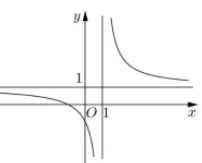
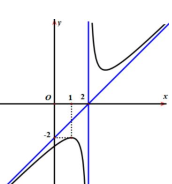
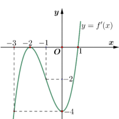
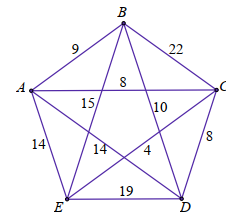

Nguyên hàm của \( x^n \): \(\int x^n \, dx = \frac{1}{n+1} x^{n+1} + C\), với \( n \neq -1 \). Áp dụng nguyên hàm từng hạng của đa thức \( 3x^2 - 2x + 1 \).
Tìm nguyên hàm của hàm số \( f(x) = 3x^2 - 2x + 1 \).
Chọn đáp án:
Lời giải:
Ta có: \(\int (3x^2 - 2x + 1) \, dx = \int 3x^2 \, dx - \int 2x \, dx + \int 1 \, dx = x^3 - x^2 + x + C\), với \( C \in \mathbb{R}\).
Đáp án: A.
Hàm số phân thức \( y = \frac{ax + b}{cx + d} \) có tiệm cận đứng tại \( x = -\frac{d}{c} \) và tiệm cận ngang \( y = \frac{a}{c} \) khi \( x \to \pm\infty \). Phân tích đồ thị để xác định hàm số.
Đường cong trong hình vẽ bên là đồ thị của hàm số nào dưới đây?

Chọn đáp án:
Lời giải:
Từ đồ thị, hàm số có tiệm cận đứng tại \( x = 1 \) và tiệm cận ngang \( y = 1 \).
- Với \( y = \frac{2x - 1}{x - 1} \), tiệm cận đứng tại \( x = 1 \), tiệm cận ngang \( y = 2 \), không phù hợp.
- Với \( y = \frac{x + 1}{x - 1} \), tiệm cận đứng tại \( x = 1 \), tiệm cận ngang \( y = 1 \), phù hợp.
- Các hàm \( y = x^3 + x^2 + 1 \) và \( y = x^3 - 3x - 1 \) không có tiệm cận, loại.
Đáp án: B.
Thể tích khối tròn xoay quanh trục hoành của hình phẳng giới hạn bởi \( y = f(x) \), trục hoành, \( x = a \), \( x = b \): \( V = \pi \int_a^b [f(x)]^2 \, dx \), với \( f(x) \geq 0 \).
Cho hàm số \( y = f(x) \) liên tục, không âm trên đoạn \([a; b]\). Hình phẳng \((H)\) giới hạn bởi đồ thị hàm số \( y = f(x) \), trục hoành và hai đường thẳng \( x = a \), \( x = b \) (tham khảo hình vẽ). Thể tích \( V \) của khối tròn xoay thu được khi quay hình \((H)\) xung quanh trục hoành được tính bằng công thức:
Chọn đáp án:
Lời giải:
Thể tích khối tròn xoay quanh trục hoành: \( V = \pi \int_a^b [f(x)]^2 \, dx \).
Đáp án: D.
Độ lệch chuẩn của mẫu số liệu ghép nhóm: \( S = \sqrt{S^2} \), với \( S^2 = \frac{1}{n} \sum f_i x_i^2 - \bar{x}^2 \), trong đó \( \bar{x} \) là trung bình, \( f_i \) là tần số, \( x_i \) là giá trị đại diện.
Mỗi ngày ông An đều đi bộ để rèn luyện sức khỏe. Quãng đường đi bộ mỗi ngày (đơn vị: km) của ông An trong 20 ngày được thống kê lại ở bảng sau:
| Quãng đường (km) | [2,7; 3,0) | [3,0; 3,3) | [3,3; 3,6) | [3,6; 3,9) | [3,9; 4,2) |
|---|---|---|---|---|---|
| Số ngày | 3 | 6 | 5 | 4 | 2 |
Độ lệch chuẩn của mẫu số liệu ghép nhóm có giá trị gần nhất với giá trị nào dưới đây?
Chọn đáp án:
Lời giải:
Giá trị đại diện: 2,85; 3,15; 3,45; 3,75; 4,05.
Trung bình: \(\bar{x} = \frac{3 \cdot 2,85 + 6 \cdot 3,15 + 5 \cdot 3,45 + 4 \cdot 3,75 + 2 \cdot 4,05}{20} = 3,39\).
Phương sai: \( S^2 = \frac{1}{20} [3 \cdot (2,85)^2 + 6 \cdot (3,15)^2 + 5 \cdot (3,45)^2 + 4 \cdot (3,75)^2 + 2 \cdot (4,05)^2] - (3,39)^2 \approx 0,1314 \).
Độ lệch chuẩn: \( S = \sqrt{0,1314} \approx 0,36 \).
Đáp án: D.
Đường thẳng qua điểm \( A \) và vuông góc với hai vector \( \vec{v}_1, \vec{v}_2 \) có vector chỉ phương là tích có hướng \( [\vec{v}_1, \vec{v}_2] \).
Trong không gian với hệ trục tọa độ \( Oxyz \), cho ba điểm \( A(-1; 2; 1) \), \( B(2; -1; 3) \), \( C(-2; 1; 2) \). Đường thẳng đi qua \( A \), đồng thời vuông góc với \( BC \) và trục \( Oy \), có phương trình là:
Chọn đáp án:
Lời giải:
\(\overrightarrow{CB} = (4; -2; 1)\), \(\vec{j} = (0; 1; 0)\).
Tích có hướng: \( [\overrightarrow{CB}, \vec{j}] = (-1; 0; 4) \).
Đường thẳng qua \( A(-1; 2; 1) \), vector chỉ phương \( (-1; 0; 4) \), có phương trình: \(\left\{\begin{array}{l}x = -1 - t \\ y = 2 \\ z = 1 + 4t\end{array}\right.\).
Đáp án: B.
Đường tiệm cận xiên của hàm \( y = \frac{ax^2 + bx + c}{mx + n} \) là \( y = \frac{a}{m}x + k \), với \( k \) được xác định từ đồ thị hoặc giới hạn.
Cho hàm số \( y = \frac{ax^2 + bx + c}{mx + n} \) (\( a \neq 0, m \neq 0 \)) có đồ thị như hình vẽ dưới đây:

Phương trình đường tiệm cận xiên của đồ thị hàm số đã cho là:
Chọn đáp án:
Lời giải:
Từ đồ thị, đường tiệm cận xiên đi qua hai điểm \( (2; 0) \) và \( (0; -2) \). Phương trình đường thẳng qua hai điểm này là \( y = x - 2 \).
Đáp án: A.
Phương trình \( \log_b x = c \Rightarrow x = b^c \). Sử dụng quy tắc đổi cơ số và tính chất lôgarit để giải.
Tổng các nghiệm của phương trình \( \log_4 x^2 - \log_2 3 = 1 \) là:
Chọn đáp án:
Lời giải:
\(\log_4 x^2 - \log_2 3 = 1 \Leftrightarrow \log_4 x^2 = 1 + \log_2 3 = \log_4 36 \Leftrightarrow x^2 = 36 \Leftrightarrow x = \pm 6\).
Tổng các nghiệm: \( 6 + (-6) = 0 \).
Đáp án: D.
Mặt phẳng qua ba điểm \( A(x_1; y_1; z_1) \), \( B(x_2; y_2; z_2) \), \( C(x_3; y_3; z_3) \) có phương trình dạng đoạn chắn: \(\frac{x}{a} + \frac{y}{b} + \frac{z}{c} = 1\).
Trong không gian \( Oxyz \), cho điểm \( M(2; 1; 3) \). Gọi \( A, B, C \) lần lượt là hình chiếu vuông góc của \( M \) trên các trục tọa độ \( Ox, Oy, Oz \). Phương trình mặt phẳng \((ABC)\) là:
Chọn đáp án:
Lời giải:
Tọa độ: \( A(2; 0; 0) \), \( B(0; 1; 0) \), \( C(0; 0; 3) \).
Phương trình đoạn chắn: \(\frac{x}{2} + \frac{y}{1} + \frac{z}{3} = 1 \Leftrightarrow 3x + 6y + 2z - 6 = 0\).
Đáp án: B.
Hàm số \( y = f(x) \) nghịch biến trên \((a; b)\) nếu \( f'(x) < 0 \). Xác định từ đồ thị của \( f'(x) \).
Cho hàm số \( y = f(x) \) có đạo hàm trên \(\mathbb{R}\) và hàm số \( y = f'(x) \) là hàm bậc ba có đồ thị là đường cong trong hình vẽ:

Hàm số \( y = f(x) \) nghịch biến trên:
Chọn đáp án:
Lời giải:
Từ đồ thị, \( f'(x) < 0 \) khi \( x < 1 \). Do đó, \( f(x) \) nghịch biến trên \((-\infty; 1)\).
Đáp án: A.
Góc nhị diện giữa đường thẳng và mặt phẳng là góc giữa đường thẳng và hình chiếu của nó trên mặt phẳng. Trong hình lập phương, tính góc bằng cách sử dụng tam giác vuông.
Cho hình lập phương \( ABCD.A'B'C'D' \) có cạnh bằng \( a \). Giá trị sin của góc nhị diện \([A', BD, A]\) là:
Chọn đáp án:
Lời giải:
Gọi \( I = AC \cap BD \). Ta có: \( BD \perp AI \), \( BD \perp AA' \Rightarrow BD \perp (AIA') \).
Góc nhị diện \([A', BD, A]\) là góc \( AIA' \).
Trong \(\triangle AIA'\) vuông tại \( A \): \( AA' = a \), \( AI = \frac{a\sqrt{2}}{2} \), \( A'I = \sqrt{a^2 + \left(\frac{a\sqrt{2}}{2}\right)^2} = \frac{a\sqrt{6}}{2} \).
\(\sin \angle AIA' = \frac{AA'}{A'I} = \frac{a}{\frac{a\sqrt{6}}{2}} = \frac{\sqrt{6}}{3}\).
Đáp án: C.
Bất phương trình \( a^{f(x)} < b \) với \( 0 < a < 1 \): \( f(x) > \log_a b \). Xác định điều kiện và giải bất phương trình.
Tập nghiệm của bất phương trình \(\left(\frac{2}{5}\right)^{x-1} < \frac{5}{2}\) là:
Chọn đáp án:
Lời giải:
\(\left(\frac{2}{5}\right)^{x-1} < \frac{5}{2} = \left(\frac{2}{5}\right)^{-1}\).
Vì \(\frac{2}{5} < 1\), ta có: \( x - 1 > -1 \Leftrightarrow x > 0 \).
Tập nghiệm: \((0; +\infty)\).
Đáp án: A.
Cấp số cộng: \( u_n = u_1 + (n-1)d \). Từ hai số hạng, lập hệ phương trình để tìm \( u_1, d \), sau đó tính \( u_n \).
Cho cấp số cộng \((u_n)\), biết \( u_2 = 3 \) và \( u_4 = 7 \). Giá trị của \( u_{15} \) bằng:
Chọn đáp án:
Lời giải:
Từ \( u_2 = u_1 + d = 3 \), \( u_4 = u_1 + 3d = 7 \), ta có: \(\left\{\begin{array}{l}u_1 + d = 3 \\ u_1 + 3d = 7\end{array}\right. \Rightarrow u_1 = 1, d = 2\).
\( u_{15} = u_1 + 14d = 1 + 14 \cdot 2 = 29 \).
Đáp án: D.
Doanh thu: \( R(x) = x \cdot p(x) \). Lợi nhuận: \( P(x) = R(x) - C(x) \). Tìm cực trị của \( P(x) \) bằng đạo hàm.
Nhà máy Samsung Bắc Ninh trung bình bán được 1500 chiếc sạc dự phòng mỗi tháng với giá 320 nghìn đồng một chiếc. Một cuộc khảo sát thị trường chỉ ra rằng nếu giảm giá bán 10 nghìn đồng, số lượng sạc dự phòng bán ra sẽ tăng thêm khoảng 100 sạc dự phòng mỗi tháng. Hàm chi phí hàng tháng là \( C(x) = 20000 - 10x \) (nghìn đồng), trong đó \( x \) là số sạc dự phòng bán ra trong một tháng. Xét tính đúng sai các mệnh đề sau:
Chọn đáp án cho từng phát biểu:
a)
b)
c)
d)
Lời giải:
a) Đúng. Hàm cầu: \( p(x) = ax + b \). Tại \( (1500; 320) \), \( (1600; 310) \): \(\left\{\begin{array}{l}1500a + b = 320 \\ 1600a + b = 310\end{array}\right. \Rightarrow a = -0,1, b = 470\). Vậy \( p(x) = -0,1x + 470 \), \( x = -10p + 4700 \). Khi \( p = 270 \), \( x = -10 \cdot 270 + 4700 = 2000 \).
b) Đúng. \( R(x) = x \cdot p(x) = x(-0,1x + 470) = -0,1x^2 + 470x \).
c) Sai. \( P(x) = R(x) - C(x) = -0,1x^2 + 470x - (20000 - 10x) = -0,1x^2 + 480x - 20000 \).
d) Sai. \( P'(x) = -0,2x + 480 = 0 \Rightarrow x = 2400 \). Lợi nhuận lớn nhất tại \( x = 2400 \), không phải 2300.
Đáp án: a) Đúng, b) Đúng, c) Sai, d) Sai.
Vận tốc \( v(t) = v_0 + at \), quãng đường \( s(t) = \int_0^t v(t) \, dt \). Dùng điều kiện dừng và quãng đường để tính.
Một ô tô đang chạy với vận tốc \( 20 \, \text{m/s} \) thì người ta nhìn thấy một chướng ngại vật nên đạp phanh. Từ thời điểm đó, ô tô chuyển động chậm dần đều với vận tốc \( v(t) = 20 - 2t \) (\( t \): giây). Xét các phát biểu sau:
Chọn đáp án cho từng phát biểu:
a)
b)
c)
d)
Lời giải:
a) Đúng. \( v(t) = 20 - 2t = 0 \Rightarrow t = 10 \, \text{s} \).
b) Đúng. \( s(t) = \int v(t) \, dt \), nên \( s(t) \) là nguyên hàm của \( v(t) \).
c) Sai. \( s(t) = \int_0^{10} (20 - 2t) \, dt = \left[20t - t^2\right]_0^{10} = 100 \, \text{m} \neq 90 \, \text{m} \).
d) Sai. Ô tô dừng tại \( t = 10 \, \text{s} \), nên từ \( t = 5 \) đến \( t = 20 \) (15 giây cuối), quãng đường là \( s(10) - s(5) \), với \( s(5) = \left[20t - t^2\right]_0^5 = 75 \, \text{m} \). Vậy \( 100 - 75 = 25 \, \text{m} \neq 125 \, \text{m} \).
Đáp án: a) Đúng, b) Đúng, c) Sai, d) Sai.
Xác suất: \( P(A) = \frac{\text{số trường hợp thuận lợi}}{\text{số trường hợp có thể}} \). Xác suất có điều kiện và công thức Bayes: \( P(A|B) = \frac{P(A \cap B)}{P(B)} \).
Một thùng hàng chứa 5 hộp sản phẩm, gồm 2 hộp loại I (20 sản phẩm, trong đó 18 tốt) và 3 hộp loại II (15 sản phẩm, trong đó 11 tốt). Lấy ngẫu nhiên một hộp, sau đó lấy ngẫu nhiên 2 sản phẩm từ hộp đó. Xét các phát biểu sau:
Chọn đáp án cho từng phát biểu:
a)
b)
c)
d)
Lời giải:
a) Đúng. \( P(C|A) = \frac{C_{18}^2}{C_{20}^2} = \frac{153}{190} \).
b) Sai. Số phế phẩm: \( 15 - 11 = 4 \). \( P(\text{2 phế}) = \frac{C_4^2}{C_{15}^2} = \frac{6}{105} = \frac{2}{35} \neq \frac{2}{105} \).
c) Đúng. \( P(A) = \frac{2}{5} \), \( P(B) = \frac{3}{5} \), \( P(C|A) = \frac{153}{190} \), \( P(C|B) = \frac{C_{11}^2}{C_{15}^2} = \frac{55}{105} = \frac{11}{21} \).
\( P(C) = P(C|A) \cdot P(A) + P(C|B) \cdot P(B) = \frac{153}{190} \cdot \frac{2}{5} + \frac{11}{21} \cdot \frac{3}{5} = \frac{2116}{3325} \).
d) Đúng. \( P(A|C) = \frac{P(C|A) \cdot P(A)}{P(C)} = \frac{\frac{153}{190} \cdot \frac{2}{5}}{\frac{2116}{3325}} = \frac{1071}{2116} \).
Đáp án: a) Đúng, b) Sai, c) Đúng, d) Đúng.
Điểm \( M \) là giao điểm của bốn mặt cầu với tâm tại các vệ tinh và bán kính là khoảng cách từ vệ tinh đến \( M \). Phương trình mặt phẳng giao tuyến của hai mặt cầu được suy ra từ hiệu phương trình.
Trong không gian, cho bốn vệ tinh \( A(1; -1; 2) \), \( B(2; 1; 3) \), \( C(-1; 4; 0) \), \( D(2; 3; 1) \). Một chiếc máy bay quân sự ở vị trí \( M \) với \( MA = 3 \), \( MB = \sqrt{5} \), \( MC = \sqrt{26} \), \( MD = \sqrt{5} \). Xét các phát biểu sau:
Chọn đáp án cho từng phát biểu:
a)
b)
c)
d)
Lời giải:
a) Đúng. \( MA = 3 \), nên bán kính mặt cầu tâm \( A \) là 3.
b) Đúng. Phương trình mặt cầu: \( (x-1)^2 + (y+1)^2 + (z-2)^2 = 9 \Leftrightarrow x^2 + y^2 + z^2 - 2x + 2y - 4z - 3 = 0 \).
c) Đúng. Mặt cầu \((S)\): \( (x-2)^2 + (y-1)^2 + (z-3)^2 = 5 \Leftrightarrow x^2 + y^2 + z^2 - 4x - 2y - 6z + 9 = 0 \). Hiệu: \( 2x + 4y + 2z - 12 = 0 \Leftrightarrow x + 2y + z - 6 = 0 \).
d) Sai. Giải hệ phương trình mặt cầu, ta được \( M(1; 0; 1) \). Kiểm tra: \( x + y + z = 1 + 0 + 1 = 2 \neq 3 \).
Đáp án: a) Đúng, b) Đúng, c) Đúng, d) Sai.
Góc nhị diện giữa mặt bên và đáy trong hình chóp được tính bằng cách tìm góc giữa hai mặt phẳng, sử dụng tam giác vuông hoặc lượng giác.
Cho hình chóp \( S.ABCD \) có đáy là hình thang vuông tại \( A \) và \( B \), với \( AB = 180 \, \text{cm} \), \( AD = BC = 98 \, \text{cm} \). Cạnh \( SO \perp (ABCD) \), và \( BC \perp SO \). Góc nhị diện tạo bởi mặt bên và mặt đáy là bao nhiêu độ? (Kết quả làm tròn đến hàng phần mười).
Nhập đáp án:
Lời giải:
\( BC \perp SO \), \( SO \perp (ABCD) \Rightarrow BC \perp (SOM) \Rightarrow BC \perp OM \).
Góc nhị diện là \( \angle SMO \).
\( SO = 98 \), \( OM = \frac{AB}{2} = 90 \).
\(\tan \angle SMO = \frac{SO}{OM} = \frac{98}{90} \approx 1,1 \Rightarrow \angle SMO \approx 47,4^\circ\).
Đáp án: 47.4.
Tìm đường đi ngắn nhất qua tất cả các điểm và quay lại điểm xuất phát (bài toán người bán hàng) bằng cách liệt kê các hành trình.
Một trò chơi điện tử quy định như sau: Có 5 trụ \( A, B, C, D, E \) với số lượng thử thách giữa các cặp trụ được mô tả trong hình bên:

Người chơi xuất phát từ một trụ bất kỳ, đi qua tất cả các trụ đúng một lần và quay lại điểm xuất phát. Tổng số thử thách nhỏ nhất là bao nhiêu?
Nhập đáp án:
Lời giải:
Các hành trình:
- \( A \to C \to E \to B \to D \to A \): \( 8 + 4 + 15 + 10 + 14 = 51 \).
- \( B \to C \to E \to D \to B \): \( 9 + 4 + 19 + 10 = 42 \) (không quay lại).
- \( C \to E \to A \to B \to D \to C \): \( 4 + 14 + 9 + 10 + 8 = 45 \).
- \( E \to C \to A \to B \to D \to E \): \( 4 + 8 + 9 + 10 + 19 = 50 \).
- \( E \to C \to D \to B \to A \to E \): \( 4 + 8 + 10 + 9 + 14 = 45 \).
Tổng số thử thách nhỏ nhất: 45.
Đáp án: 45.
Tổng khoảng cách từ điểm \( M \) đến hai điểm \( A, B \) nhỏ nhất khi \( M \) nằm trên đường thẳng qua \( A \) và điểm đối xứng \( B' \) của \( B \) qua mặt phẳng.
Hai chiếc khinh khí cầu bay lên từ cùng một địa điểm trong không gian. Sau một khoảng thời gian, chiếc thứ nhất nằm cách điểm xuất phát 3 km về phía Đông và 2 km về phía Nam, đồng thời cách mặt đất 0,5 km; chiếc thứ hai nằm cách điểm xuất phát 1 km về phía Bắc và 1 km về phía Tây, đồng thời cách mặt đất 0,3 km. Một người đứng trên mặt đất nhìn thấy hai khinh khí cầu. Tổng khoảng cách từ người đó đến hai khinh khí cầu là nhỏ nhất. Hỏi tổng khoảng cách nhỏ nhất ấy bằng bao nhiêu kilômét? (Làm tròn kết quả đến hàng phần mười).
Nhập đáp án:
Lời giải:
Hệ tọa độ: \( Ox \) (Nam), \( Oy \) (Đông), \( Oz \) (lên). \( O(0; 0; 0) \), \( A(2; 3; 0,5) \), \( B(-1; -1; 0,3) \).
\( B'(-1; -1; -0,3) \) đối xứng qua \((Oxy)\). \( M(x_M; y_M; 0) \).
\( \overrightarrow{MA} = (2 - x_M; 3 - y_M; 0,5) \), \( \overrightarrow{MB'} = (-1 - x_M; -1 - y_M; -0,3) \).
\( A, B', M \) thẳng hàng: \(\frac{-1 - x_M}{2 - x_M} = \frac{-1 - y_M}{3 - y_M} = \frac{-0,3}{0,5} \Rightarrow x_M = \frac{1}{8}, y_M = \frac{1}{2}\).
\( \min(MA + MB) = AB' \approx 5,1 \, \text{km} \).
Đáp án: 5.1.
Diện tích phần cần tính là hiệu giữa diện tích hình giới hạn bởi parabol và trục \( Ox \) và diện tích hình chữ nhật.
Một chiếc cổng có hình dạng là một parabol với khoảng cách giữa hai chân cổng là \( AB = 8 \, \text{m} \). Người ta treo một tấm phông hình chữ nhật có hai đỉnh \( M, N \) nằm trên parabol và hai đỉnh \( P, Q \) nằm trên mặt đất. Biết \( MN = 4 \, \text{m} \), \( MQ = 6 \, \text{m} \). Diện tích phần phía ngoài phông (phần không tô đen) để trang trí hoa là bao nhiêu mét vuông? (Kết quả làm tròn đến hàng phần mười).
Nhập đáp án:
Lời giải:
Diện tích hình chữ nhật: \( MN \cdot MQ = 4 \cdot 6 = 24 \, \text{m}^2 \).
Parabol: \( y = ax^2 + c \). Qua \( B(4; 0) \), \( N(2; 6) \): \( y = -\frac{1}{2}x^2 + 8 \).
Diện tích dưới parabol: \( S_1 = 2 \int_0^4 \left(-\frac{1}{2}x^2 + 8\right) \, dx = \frac{128}{3} \, \text{m}^2 \).
Diện tích cần trang trí: \( S = \frac{128}{3} - 24 = \frac{56}{3} \approx 18,7 \, \text{m}^2 \).
Đáp án: 18.7.
Thể tích lăng trụ: \( V = S_{\text{đáy}} \cdot h \). Tìm giá trị \( x \) để \( V \) lớn nhất bằng đạo hàm.
Cho một tấm nhôm hình lục giác đều cạnh 90 cm. Người ta cắt ở mỗi đỉnh của tấm nhôm hai hình tam giác vuông bằng nhau, biết cạnh góc vuông nhỏ bằng \( x \, \text{cm} \). Tìm \( x \) để thể tích của khối lăng trụ lục giác đều là lớn nhất.
Nhập đáp án:
Lời giải:
Cạnh đáy lăng trụ: \( 90 - 2x \).
Chiều cao: \( x \sqrt{3} \).
Diện tích đáy: \( S_{\text{đáy}} = 6 \cdot \frac{\sqrt{3}}{4} (90 - 2x)^2 \).
Thể tích: \( V(x) = \frac{9}{2} x (90 - 2x)^2 = 18x^3 - 1620x^2 + 36450x \), \( x \in (0; 45) \).
\( V'(x) = 54x^2 - 3240x + 36450 = 0 \Rightarrow x = 15 \) (loại \( x = 45 \)).
Bảng biến thiên xác nhận \( V(x) \) đạt cực đại tại \( x = 15 \).
Đáp án: 15.
Xác suất của hai biến cố liên tiếp: \( P(A \cap B) = P(A) \cdot P(B|A) \). Giải phương trình xác suất để tìm số lượng ban đầu.
Trong một túi có một số viên kẹo cùng loại, chỉ khác màu, trong đó có 6 viên kẹo màu cam, còn lại là kẹo màu vàng. Hà lấy ngẫu nhiên 1 viên kẹo từ trong túi, không trả lại. Sau đó, Hà lấy ngẫu nhiên thêm 1 viên kẹo khác. Biết rằng xác suất Hà lấy được cả hai viên kẹo màu cam là \(\frac{1}{3}\). Hỏi ban đầu trong túi có bao nhiêu viên kẹo?
Nhập đáp án:
Lời giải:
Gọi \( n \) là số viên kẹo ban đầu (\( n \geq 6 \)).
Xác suất lấy 2 viên cam: \( P = \frac{6}{n} \cdot \frac{5}{n-1} = \frac{30}{n(n-1)} = \frac{1}{3} \).
\( n(n-1) = 90 \Rightarrow n^2 - n - 90 = 0 \Rightarrow n = 10 \) (loại \( n = -9 \)).
Đáp án: 10.